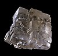

sodium-chloride

Definition: Sodium chloride , commonly known as salt (although sea salt also contains other chemical salts), is an ionic compound with the chemical formula NaCl, representing a 1:1 ratio of sodium and chloride ions. With molar masses of 22.99 and 35.45 g/mol respectively, 100 g of NaCl contains 39.34 g Na and 60.66 g Cl. Sodium chloride is the salt most responsible for the salinity of seawater and of the extracellular fluid of many multicellular organisms. In its edible form, salt (also known as table salt) is commonly used as a condiment and food preservative. Large quantities of sodium chloride are used in many industrial processes, and it is a major source of sodium and chlorine compounds used as feedstocks for further chemical syntheses. Another major application of sodium chloride is deicing of roadways in sub-freezing weather.
Source: Wikipedia
Wikipedia Page (Something wrong with this association? Let us know.)
Wikidata Page (Something wrong with this association? Let us know.)
Occurs in: